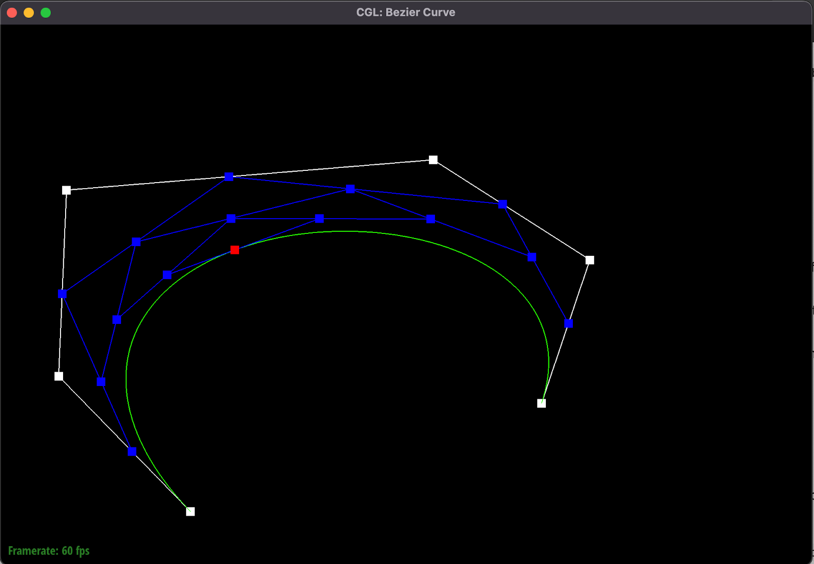
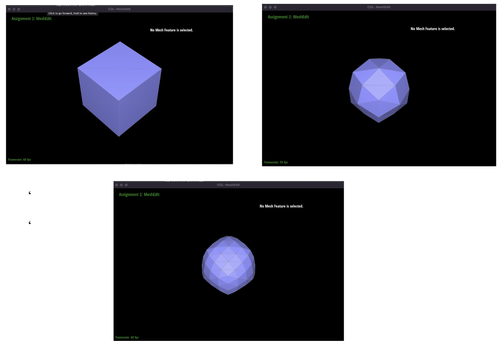

CS 184: Computer Graphics and Imaging, Spring 2024
Project 2: Mesh Edit
Arav and Sophia
Overview
In this homework, we created bezier curves/surfaces, implemented triangle mesh manipulation through edge flips and splits and area-weighted vertex normals, and added loop subdivision.
In total, our program can take in Bezier curve/surface files (.bzc and .bez) and ultimately render them with a GUI that allows the user to adjust t-values and manipulate points. We can also render triangle meshes through COLLADA mesh files (.dae) and the user can similarly interact, additionally flipping/splitting edges or upsampling the mesh.
Overall, there were many things we took away from this assignment. First of all, we found that though the data structures for iterating over a mesh very naturally represent the mesh, there is some ambiguity in pointer assignments (for instance, a vertex can point to an arbitrary outgoing halfedge). For this reason, half-edges had to anchor mesh traversal for the most part. Additionally, because of the large number of pointers within these data structures, we had to be very careful and verbose when reassigning pointers for edge flips and splits.
Secondly, there are definite tradeoffs to higher-resolution solutions, such as significantly upsampled meshes. While they may result in smoother curved surfaces, like a teapot or ball, it is a significantly higher hit to performance and can even harm sharp corners/edges if not preprocessed or dealt with in some way, as explored below with the cube.
The last takeaway is that the ways in which triangles can be applied to various forms of graphics is quite amazing. Between 2D rasterization techniques as well as 3d triangle meshes, it is fascinating that such a basic structure can be so versatile and efficient in so many representations.
Section I: Bezier Curves and Surfaces
Part 1: Bezier Curves with 1D de Casteljau Subdivision
Briefly explain de Casteljau's algorithm and how you implemented it in order to evaluate Bezier curves.
Given a list of n ordered points, de Casteljau's algorithm linearly interpolates between each pair of adjacent points recursively such that each recursive call yields an ordered list of n - 1 points, and the algorithm terminates once there is a single point returned by a recursive call.
We implemented the evaluate_step function as a helper function to de Casteljau’s algorithm. This function takes in a series of points, and iterates through all points except for the last, returning a list of the linear interpolation of each pair of adjacent points (consider index i and i+1) using the lerp formula and the constant t.
Take a look at the provided .bzc files and create your own Bezier curve with 6 control points of your choosing. Use this Bezier curve for your screenshots below.
Our unique bezier curve with 6 control points:
Show screenshots of each step / level of the evaluation from the original control points down to the final evaluated point. Press E to step through. Toggle C to show the completed Bezier curve as well.
|
Level 0
|
Level 1
|
|
Level 2
|
Level 3
|
|
Level 4
|
Show a screenshot of a slightly different Bezier curve by moving the original control points around and modifying the parameter \(t\) via mouse scrolling.

Part 2: Bezier Surfaces with Separable 1D de Casteljau
Briefly explain how de Casteljau algorithm extends to Bezier surfaces and how you implemented it in order to evaluate Bezier surfaces.
De Casteljau's algorithm can be used to create Bezier surfaces by first creating a series of Bezier curves in one direction using the same recursive method used in Task 1, then evaluating another Bezier curve at the v-coordinate along those series of Bezier curves. To implement this, we first filled in BezierPatch::evaluateStep which uses practically the same code as BezierCurve::evaluateStep, except the interpolation function uses a 3D vector instead of a 2D vector. Then, in evaluate1D, we repeatedly called evaluateStep on the series of points it returned until we are left with just one point. Lastly, in the evaluate function, we compile a list of Bezier points by calling evaluate1D for every vector in ControlPoints using the u parameter, then make a final call to evaluate1D on the Bezier curve formed by this list of Bezier points and the v parameter, which is the point in 3D space that is ultimately returned.
Show a screenshot of bez/teapot.bez (not .dae) evaluated by your implementation.
Section II: Triangle Meshes and Half-Edge Data Structure
Part 3: Area-Weighted Vertex Normals
Briefly explain how you implemented the area-weighted vertex normals.
To implement area-weighted vertex normals, we iterate through all triangles adjacent to a vertex and aggregate the area and unit normal vector for each triangle. We first calculate the cross product of two vectors making up the triangle, which is used to calculate both area and unit normal vector. Area of a triangle is equal to half the cross product magnitude, and unit normal can be calculated by calling the unit() function on the cross product. Lastly, we iterate through our list of areas and unit normal vectors, returning the weighted average by taking the sum of area * unit normal for each triangle and dividing by the total number of adjacent triangles.
An issue that we overcame was calculating the vectors that comprise each triangle. Initially, we treated the 3D position coordinates of a triangle's vertices as the vectors, but then after debugging realized that we needed to subtract the coordinate vectors (ie v2 - v0) to get vectors comprising the edges of a triangle.
Show screenshots of dae/teapot.dae (not .bez) comparing teapot shading with and without vertex normals. Use Q to toggle default flat shading and Phong shading.
|
Teapot shading without vertex normals
|
Teapot shading with vertex normals
|
Part 4: Edge Flip
Briefly explain how you implemented the edge flip operation and describe any interesting implementation / debugging tricks you have used.
To perform an edge flip, we manually reassigned pointers for all halfedges, edges, vertices, and faces involved in the flip. First, we enumerated all of the aforementioned items in the two initial triangles, naming them according to their position on the above diagram. Then, we perform reassignment such that triangles abc and cbd become triangles adc and abc, respectively.
|
Teapot before edge flips
|
 Teapot after edge flips
Teapot after edge flips
|
Write about your eventful debugging journey, if you have experienced one.
One issue that we came across while working on this task was that after a few edge flips, sometimes a face would disappear and there would be a hole in the mesh. After manually going through our code, we realized that some faces were not being assigned correctly to their respective halfedges, and we adjusted this, fixing the mesh holes.
Part 5: Edge Split
Briefly explain how you implemented the edge split operation and describe any interesting implementation / debugging tricks you have used.

For edge splits, similarly to the edge flips, we used a great deal of pointer reallocation in order to produce a proper implementation (though in much greater volume this time). The biggest challenge in this task was staying organized, so we found it worthwhile to draw a diagram of the triangles before and after the edge split, complete with extensive labeling of the vertices, edges, half-edges, and faces. We also color coded our diagrams to display the newly created objects vs the retained objects before and after the split. The second component of organization was writing code in a linear and intuitive manner. We decided the best way to go about this was first creating variables for every halfedge, edge, vertex, and face. Then, we assigned (or reassigned) half-edges and faces in the order of each face, and finally assigned vertices and edges all together. In sum, while this task was not conceptually challenging, staying organized was the main hurdle, while keeping track of all the pointers in an effective manner.
Show screenshots of a mesh before and after some edge splits.
Before (top) and after (bottom) edge splits:
After a combination of both edge splits and edge flips:
Write about your eventful debugging journey, if you have experienced one.
We did not have an extensive debugging journey save for one minor mistake – when calculating the position of the newly created vertex "m", we initially arbitrarily decided to use the two opposing vertices ("a" and "d" in the spec) to calculate the midpoint, believing that the midpoint would be the same whether calculated based on AD or BC (the shared edge). After observing strange shading and split behavior with this implementation, we realized that the placement of m was incorrect- and that it should lie on the midpoint of the shared edge. After rectifying this, we observed more expected behavior as shown in the images above.
Part 6: Loop Subdivision for Mesh Upsampling
Briefly explain how you implemented the loop subdivision and describe any interesting implementation / debugging tricks you have used.
To implement loop subdivision, we followed the five subparts outlined in the upsample function. First, using formula (2) provided in the spec, we compute
the new positions for all existing vertices, assigning the newPosition attribute for every vertex. Then, in subpart two, we calculate the position of the
vertex that will be added to each edge that is to be split by using formula (1), update the newPosition attribute for each edge accordingly, and set each
edge's isNew attribute to false since we are iterating through existing edges in the mesh. In subpart three, we iterate through every edge in the mesh,
and if a given edge is an old edge and the two vertices it connects are also old vertices (old meaning that edge/vertex existed in the mesh prior to
upsampling), then that edge is split. For this subpart to work correctly, we also updated splitEdge to assign the isNew attributes of edges involved in the
split. The isNew attribute of the vertex that is returned by splitEdge is set to true, and that vertex’s position is updated to the edge’s newPosition. In
subpart four, we flip any edges connecting one new and one old vertex. Lastly, in subpart five, we iterate through all vertices and update their positions
to their newPositions.
A debugging challenge we faced was incorrectly updating vertex positions. In subpart five, we initially had an if statement that caused only new vertices
rather than all vertices to get their positions updated. This created an interesting pattern whenever upsampling; for instance, our teapot became “bumpy”
with extrusions. We had thought that there was an issue with the way we were splitting edges or the math in assigning vertex positions, but had overlooked
subpart five while debugging since it seemed very straightforward.
Take some notes, as well as some screenshots, of your observations on how meshes behave after loop subdivision. What happens to sharp corners and edges? Can you reduce this effect by pre-splitting some edges?
It appears that loop subdivision helps smoothen rounded/curved surfaces well, while causing edges/corners to smoothen and lose their sharpness. An example of a clearly refined, smoother mesh can be shown with the teapot, where loop subdivision improves the quality of the resulting surface. Below, the original mesh and subsequent 2 loop subdivisions are shown:
However, loop subdivision seems to aggressively round sharp edges/corners, leaving higher resolution meshes lacking the original sharpness at certain points- for example, the cube after just one or two loop subdivisions already becomes aggressively smoothened:

We can reduce this effect by pre-splitting edges. Below, a preprocessed mesh is shown with us splitting the cube’s edge several times, and the following screenshots show the result of 1 and 2 loop subdivisions respectively. Although not perfect, there is clearly more of a retained sharpness than before.
Load dae/cube.dae. Perform several iterations of loop subdivision on the cube. Notice that the cube becomes slightly asymmetric after repeated subdivisions. Can you pre-process the cube with edge flips and splits so that the cube subdivides symmetrically? Document these effects and explain why they occur. Also explain how your pre-processing helps alleviate the effects.
After several iterations of loop subdivision without any preprocessing, the cube clearly becomes asymmetric. Below the original mesh is shown, followed by 3 consecutive loop subdivisions.
We can preprocess the mesh to have the resulting subdivision produce a symmetric cube. To accomplish this, we manually split the edge that ran diagonally across each face of the cube. The result is shown, followed by the ensuing 3 loop subdivisions. Notice that the result is symmetric, unlike before.
The reason for this is because each face of the cube becomes symmetric due to these subdivisions in preprocessing, and upsampling a symmetric mesh results in another symmetric mesh.